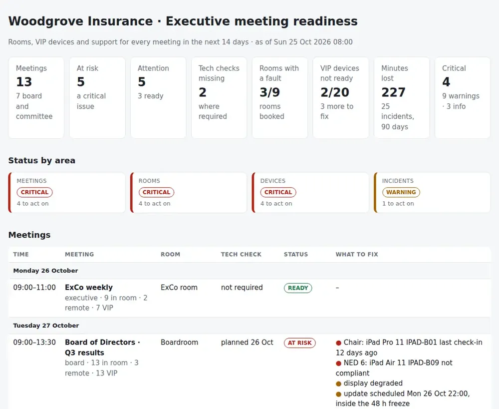

Cuando un consejo sale mal, las causas solían verse días antes: el array de micrófonos aparecía desconectado en la salud de Teams Rooms, el iPad del presidente llevaba doce días sin conectar con el MDM, el sistema de gestión de dispositivos móviles, había una actualización de la sala programada para la noche anterior y la prueba técnica de la semana pasada nunca se hizo. Eso es lo que busca la revisión de preparación de reuniones que acompaña a este post, una herramienta de código abierto que se ejecuta con datos de ejemplo de una aseguradora inventada con once salas en tres oficinas, 13 reuniones en las próximas dos semanas, 20 dispositivos VIP y 90 días de incidencias de salas, con los problemas puestos a propósito.
Las señales están en el centro de administración de Teams, Intune o Jamf, los calendarios de las salas y la herramienta de soporte. La revisión las junta por reunión y da a cada una un veredicto: lista, atención o en riesgo. La preparación es de la reunión, no de la sala: la misma pantalla degradada es una nota para un taller y una decisión para el consejo.
Reuniones sin prueba técnica y salas que no encajan
En consejos, comités y reuniones con inversores, la herramienta señala los que no tienen prueba técnica en la última semana, las salas pequeñas o sin Teams Rooms para una reunión híbrida, las reservas solapadas o sin tiempo de preparación y la falta de técnico asignado. En las salas, marca las Teams Rooms desconectadas, los periféricos con fallos, las actualizaciones dentro de la congelación y las incidencias repetidas.
Dispositivos VIP por debajo de la versión mínima
En los asistentes, la revisión lista los dispositivos que no cumplen la política o no se han conectado, el sistema operativo o la app del consejo por debajo del mínimo, las baterías gastadas y los asistentes sin dispositivo registrado. El resultado es un informe web día a día, un pack de preparación con una lista de comprobación por reunión y asistente, y ficheros CSV.
Cómo usarlo con datos reales
Un exportador de solo lectura en PowerShell para Microsoft Graph lee la salud de Teams Rooms, los calendarios de las salas y los dispositivos de Intune. Funciona con Python y solo la librería estándar, con 13 tests y un runbook. Lo propuesto es empezar con los consejos y comités del próximo mes y enviar el pack a la secretaría del consejo el día antes de cada consejo.
De dónde sale
La herramienta nace de dar soporte a consejos y comités de dirección: Teams Rooms sobre Crestron con sistemas Logitech y Poly, iPads, MacBooks e iPhones gestionados con Jamf Pro e Intune, y soporte VIP a directivos y consejeros.
¿Quieres llevarlo a tu entorno o adaptarlo a tu caso? Escríbeme y lo vemos.
Tech Career Lab · newsletter
¿Te ha servido? Cada dos semanas envío una idea práctica para perfiles IT: LinkedIn, proyectos, networking y procesos de selección.
Apúntate y llévate las 33 ideas →